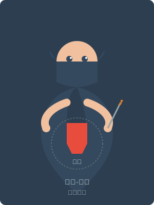

凯恩·暗影
返回首页

基本信息
姓名：
凯恩·暗影
种族：
人类
年龄：
28岁
身份：
暮光城的刺客，暗影组织成员
阵营：
中立善良
能力与特长
- 隐匿术：能够在阴影中完美隐藏自己的行踪
- 匕首精通：擅长使用各种匕首和短兵器
- 暗杀技艺：能够在不被发现的情况下接近目标
- 感知敏锐：拥有超越常人的观察力和直觉
- 快速移动：能够在城市环境中快速穿梭
背景故事
凯恩·暗影出生在暮光城的贫民区，父母是普通的工匠。在他8岁那年，一群神秘黑衣人闯入他的家中，杀害了他的父母，夺走了一件他们守护的古老物品。
成为孤儿后，凯恩开始在街头流浪，为了生存学会了偷窃和隐匿。12岁时，他被暗影组织的首领发现并收养。暗影组织表面上是一个刺客组织，但实际上是暮光城的秘密守护者，负责铲除那些威胁城市安全的黑暗势力。
在组织中，凯恩接受了严格的训练，成为了一名出色的刺客。然而，他从未忘记寻找杀害父母的凶手。随着调查的深入，他发现父母的死亡可能与一个更大的阴谋有关，这个阴谋甚至可能威胁到整个世界的安全。
在一次任务中，凯恩结识了艾莉亚和莱奥。尽管三人的背景和性格截然不同，但共同的目标让他们走到了一起，成为了对抗黑暗势力的盟友。
性格特点
凯恩性格冷静、沉默寡言，总是保持着高度的警惕。他习惯独来独往，很少与他人建立深厚的感情纽带，这既是出于刺客的职业习惯，也是为了保护自己不受伤害。
尽管表面上看起来冷漠，但凯恩内心深处有着强烈的正义感。他严格遵守着自己的原则，从不杀害无辜的人。对于他认可的朋友，凯恩会表现出绝对的忠诚，甚至愿意为他们牺牲自己的生命。
凯恩有着出色的分析能力和敏锐的直觉，善于从细微处发现线索。他的洞察力经常在团队中发挥重要作用，帮助大家避开危险或找出敌人的弱点。